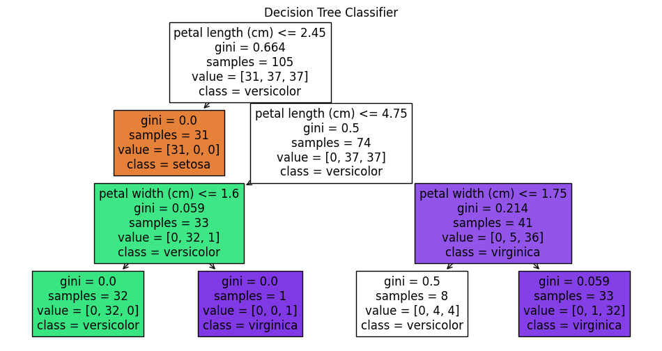
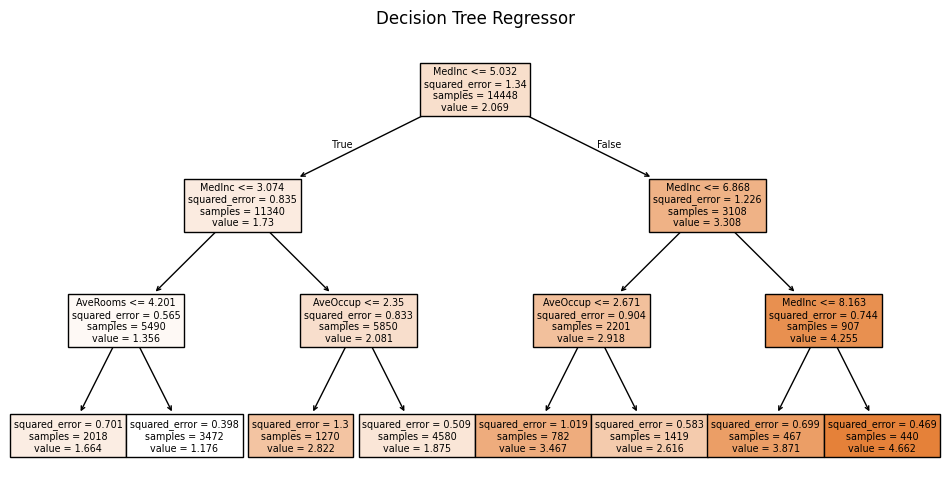
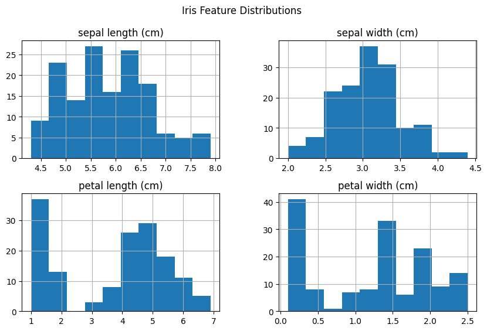
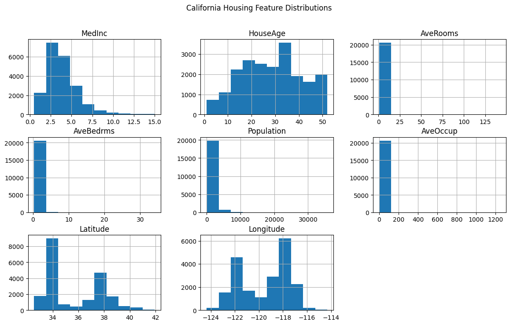

# Import libraries
import pandas as pd
import matplotlib.pyplot as plt
from sklearn.datasets import load_iris, fetch_california_housing
from sklearn.tree import DecisionTreeClassifier, DecisionTreeRegressor, plot_tree
from sklearn.model_selection import train_test_split
import seaborn as sns
%matplotlib inlineDecision Tree Basics
Decision Trees are supervised learning models used for both classification and regression tasks. They work by recursively splitting the dataset based on feature values to reduce impurity.
How It Works
- For classification, trees use metrics like Gini impurity or Entropy to decide the best split.
- For regression, they typically minimize Mean Squared Error (MSE).
The tree starts at a root and splits the data into branches based on feature thresholds, creating a path to a decision leaf.
🔍 How Splitting Works in Decision Trees
🧪 Classification: Gini Impurity and Entropy
To decide the best feature and threshold to split on, decision trees evaluate impurity at each possible split. Lower impurity means a better split.
✅ Gini Impurity
Gini measures how often a randomly chosen element would be incorrectly labeled if it was randomly labeled according to the distribution in the node:
\[ \text{Gini} = 1 - \sum_{i=1}^{C} p_i^2 \]
Where: - $ C $ is the number of classes
- $ p_i $ is the proportion of class $ i $
✅ Entropy (Information Gain)
Entropy measures the disorder or uncertainty of the classes:
\[ \text{Entropy} = - \sum_{i=1}^{C} p_i \log_2(p_i) \]
A split is chosen to minimize the weighted impurity (Gini or Entropy) of the resulting child nodes.
📈 Regression: Mean Squared Error (MSE)
In regression trees, the quality of a split is measured using Mean Squared Error, which calculates how far predictions are from actual values.
✅ MSE Formula
\[ \text{MSE} = \frac{1}{n} \sum_{i=1}^{n} (y_i - \bar{y})^2 \]
Where: - $ y_i $ are the true values
- $ {y} $ is the mean value of the current region
- $ n $ is the number of samples
The best split minimizes the total MSE across the child nodes.
🎯 Final Prediction
- Classification Tree: predicts the majority class in a leaf.
- Regression Tree: predicts the mean target value of samples in a leaf.
Key Hyperparameters
max_depth: Maximum number of splits down any path.min_samples_split: Minimum samples needed to split a node.min_samples_leaf: Minimum samples in a leaf node.criterion: Splitting metric (gini,entropy,squared_error).
# Load classification dataset (Iris as placeholder for visualization)
iris = load_iris(as_frame=True)
X_cls = iris.data
y_cls = iris.target
Xc_train, Xc_test, yc_train, yc_test = train_test_split(X_cls, y_cls, test_size=0.3, random_state=42)# Train a Decision Tree Classifier
clf = DecisionTreeClassifier(max_depth=3, random_state=42)
clf.fit(Xc_train, yc_train)
plt.figure(figsize=(12, 6))
plot_tree(clf, feature_names=iris.feature_names, class_names=iris.target_names, filled=True)
plt.title('Decision Tree Classifier')
plt.show()
# Load regression dataset (California housing)
housing = fetch_california_housing(as_frame=True)
X_reg = housing.data
y_reg = housing.target
Xr_train, Xr_test, yr_train, yr_test = train_test_split(X_reg, y_reg, test_size=0.3, random_state=42)# Train a Decision Tree Regressor
reg = DecisionTreeRegressor(max_depth=3, random_state=42)
reg.fit(Xr_train, yr_train)
plt.figure(figsize=(12, 6))
plot_tree(reg, feature_names=housing.feature_names, filled=True)
plt.title('Decision Tree Regressor')
plt.show()
Dataset Summaries
# Iris dataset
display(X_cls.describe())
X_cls.hist(figsize=(10,6))
plt.suptitle('Iris Feature Distributions')
plt.show()| sepal length (cm) | sepal width (cm) | petal length (cm) | petal width (cm) | |
|---|---|---|---|---|
| count | 150.000000 | 150.000000 | 150.000000 | 150.000000 |
| mean | 5.843333 | 3.057333 | 3.758000 | 1.199333 |
| std | 0.828066 | 0.435866 | 1.765298 | 0.762238 |
| min | 4.300000 | 2.000000 | 1.000000 | 0.100000 |
| 25% | 5.100000 | 2.800000 | 1.600000 | 0.300000 |
| 50% | 5.800000 | 3.000000 | 4.350000 | 1.300000 |
| 75% | 6.400000 | 3.300000 | 5.100000 | 1.800000 |
| max | 7.900000 | 4.400000 | 6.900000 | 2.500000 |

# California Housing dataset
display(X_reg.describe())
X_reg.hist(figsize=(14,8))
plt.suptitle('California Housing Feature Distributions')
plt.show()| MedInc | HouseAge | AveRooms | AveBedrms | Population | AveOccup | Latitude | Longitude | |
|---|---|---|---|---|---|---|---|---|
| count | 20640.000000 | 20640.000000 | 20640.000000 | 20640.000000 | 20640.000000 | 20640.000000 | 20640.000000 | 20640.000000 |
| mean | 3.870671 | 28.639486 | 5.429000 | 1.096675 | 1425.476744 | 3.070655 | 35.631861 | -119.569704 |
| std | 1.899822 | 12.585558 | 2.474173 | 0.473911 | 1132.462122 | 10.386050 | 2.135952 | 2.003532 |
| min | 0.499900 | 1.000000 | 0.846154 | 0.333333 | 3.000000 | 0.692308 | 32.540000 | -124.350000 |
| 25% | 2.563400 | 18.000000 | 4.440716 | 1.006079 | 787.000000 | 2.429741 | 33.930000 | -121.800000 |
| 50% | 3.534800 | 29.000000 | 5.229129 | 1.048780 | 1166.000000 | 2.818116 | 34.260000 | -118.490000 |
| 75% | 4.743250 | 37.000000 | 6.052381 | 1.099526 | 1725.000000 | 3.282261 | 37.710000 | -118.010000 |
| max | 15.000100 | 52.000000 | 141.909091 | 34.066667 | 35682.000000 | 1243.333333 | 41.950000 | -114.310000 |
